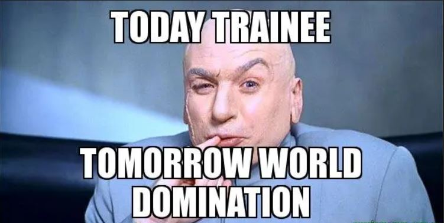
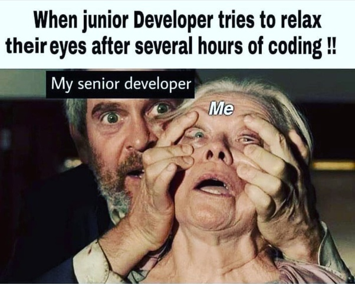
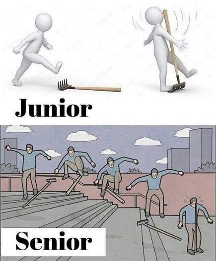

What Immerse does
Tomorrows game developers
This is the initial overview of Immerse as an organization. And will present the main idea of how you can learn game development as a “learn-by-doing” stepwise process through creating your own video games in the Unity environment.
The purpose of the section is not to be exhaustive, but just enough to trigger visitor‘s interest and clarify the purpose of Immerse.
Who Immerse is for
Soon to be developers
"Who Immerse are for” will clarify what kind of personnel Immerse are aiming for.
This is done by describing the necessary competencies before enrolling, what fields of interest Immerse are fulfilling, and the general life situation.
For example the necessary competence will be summarized as
“It is sufficient with basic knowledge of a programming language, for example the knowledge gained from ITGK in Python. In general you are fulfilling the requirements as long as you understand how a computer performs actions”.
What Immerse offers
What you can expect from enrolling at immerse
Section “What you can expect from enrolling at immerse” is the main information in the about page. Here the visitor will be presented with the idea of a semester based course, where you enroll with only basic knowledge of computers and gradually work your way through pre-defined projects, gaining new skills in game development. There will be some text describing the journey, but the explanation shall happen through a figure/model which shows each semester/step and explains what kind of project you will do and what you will learn. This ensures a visual, easy to understand presentation of the Immerse pipeline.
-
First semester
Noob
In your first semester you will acquire the skills to start making games. You will learn about the Unity game engine, the C# programming language and how to work as a team using github. You will also create some smaller games.
 -
Second semester
Junior developer
Starting your second semester you become a junior developer and will work on a larger game with some supervision. You will also help members in their first semester.
 -
Third semester
Senior developer
When you no longer need supervision you will become a senior, aka someone who supervises junior developers.

How you can enroll at Immerse
The last section “How you can enroll at Immerse" will explain how you can start at Immerse, along with when. It's only possible to enroll at Immerse in January, as the pipeline is built based on students who just finished ITGK.